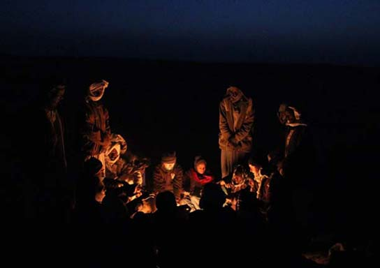
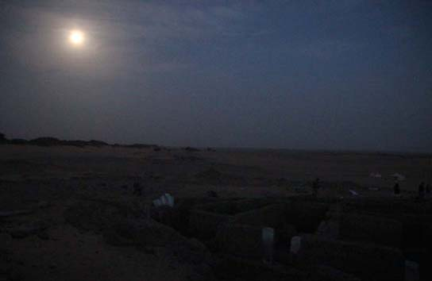
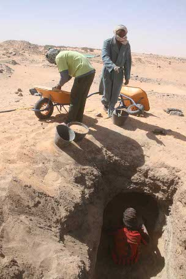
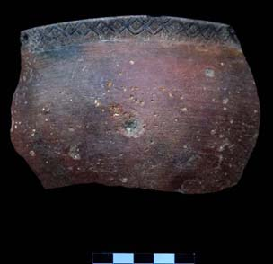
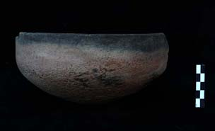
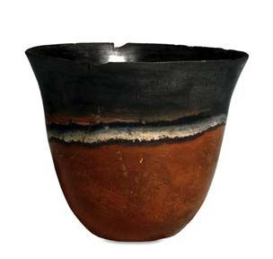
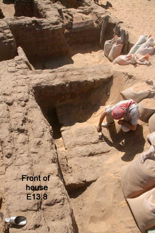

Amara West 2012: fertility figurines discovered
Tue, 14 Feb 2012 17:37:44 +0000
Hélène Virenque, Egyptologist Mary Shepperson and I found three small clay figurines in house E13.6, some of the few anthropomorphic representations found at Amara West. Although incomplete, the three figurines have the same rectangular shape and a fine polished surface. They each depict a naked woman, in a very schematic form, with only the breasts [...]
Hélène Virenque, Egyptologist
Mary Shepperson and I found three small clay figurines in house E13.6, some of the few anthropomorphic representations found at Amara West.
")
Clay female figurines from house E13.6 (left-right F6018, F5998, F5996)
Although incomplete, the three figurines have the same rectangular shape and a fine polished surface. They each depict a naked woman, in a very schematic form, with only the breasts and a pubic triangle shown in detail. The breasts are usually added as separate pieces of clay, and thus easily break off, as with two of our examples. The pubic triangle was marked with a series of small holes. None feature legs or arms.

Wooden figurine of a woman with clay hair, from Thebes about 1750 BC. British Museum collection
Such representations are well known in ancient Egypt, especially from the Middle Kingdom onwards. By emphasing the genitalia, they evoke the woman as a source of fertility and thus could be associated with the cult of the goddess Hathor.
Some similar statuettes were found in Upper Egypt, placed in the temple of Deir el-Bahri during the New Kingdom. Other more elaborate types of fertility figurine, in painted wood, are known from late Middle Kingdom tombs.
Leave a comment or tweet using #amarawest
Find out more about the Amara West research project
Amara West 2012: preserving ancient basketry, textiles and wood
Mon, 13 Feb 2012 15:55:08 +0000
Philip Kevin, British Museum Many objects discovered in the cemetery at Amara West require conservation to even allow them to be lifted, as they cannot support their own weight without consolidation. This is particularly true with organic material, which tends to be poorly preserved in the burial conditions here. In addition to natural degradation through [...]
Philip Kevin, British Museum
Many objects discovered in the cemetery at Amara West require conservation to even allow them to be lifted, as they cannot support their own weight without consolidation.
This is particularly true with organic material, which tends to be poorly preserved in the burial conditions here. In addition to natural degradation through desiccation and the effects of termites, disturbance by looters (ancient and modern) has left objects in a very fragile condition.

Tools of the trade: consolidating fragile organic remains
The roofs of the burial chambers were often collapsed as looters entered to gain access to grave contents. The resulting fall of sharp schist gravel ripped through and crushed much of what lay below, including the coffin found in grave G309. Careful excavations by Åshild Vågene revealed traces of wood and plaster.

Tight working conditions: preparing to lift the bed in G314
These coffins are constructed from wood onto which a thin layer of plaster is applied to all surfaces; this is then painted, and in some cases varnished with a plant resin. Our two coffin fragments (of 20cm by 10cm) had only tiny traces of the internal plaster remaining, but pieces of crumbly wood were still in place. The outer plaster skin has survived in better condition, and is painted.
In order to impart some strength to allow the pieces to be lifted, I started by strengthening the wood and plaster with a mixture of solvent and a synthetic adhesive. It was impossible to remove the fine sand and soil without losing original wood and plaster; even using a small blower would cause some plaster to disappear in a cloud of white dust.
Having consolidated the wood and plaster, an additional support was attached to the back (inside of the coffin) and the fragments were then lifted and returned to the expedition house where they await further treatment.
In another grave being excavated by Laurel Engbring and Michaela Binder, fragments of a Nubian-style funerary bed and a basket were revealed, and I treated them in a similar manner before lifting. A fragment of textile (approximately 10cm2) was also conserved in this grave, offering a rare chance to study the weaving technique used.
This is my first time in Sudan, and it has been fantastic – except when I missed my step clambering out of the boat in the 6.30am darkness, and ended up in the Nile.
Leave a comment or tweet using #amarawest
Find out more about the Amara West research project
Amara West 2012: approaching the final week
Thu, 09 Feb 2012 18:40:00 +0000
Neal Spencer, British Museum The weather continues to surprise, with strong and cold winds making the sky seem foggy. We’re hearing that fellow excavators near Khartoum, and as far north as Luxor in Egypt, are also reporting strange conditions. At Amara, when we arrive before 7am, the workmen are usually huddling around a fire to [...]
Neal Spencer, British Museum
The weather continues to surprise, with strong and cold winds making the sky seem foggy. We’re hearing that fellow excavators near Khartoum, and as far north as Luxor in Egypt, are also reporting strange conditions.

Workmen and excavators keeping warm before work starts
At Amara, when we arrive before 7am, the workmen are usually huddling around a fire to keep warm. Far from electrical lights, we also become more aware of the cycles of the moon – we’ve just had a full moon, and work started today as the moon set over the town and cemetery.

The moon setting over Amara West at 06.58 on 9 February 2012
We start our last week of digging on Saturday – trying to answer some outstanding questions, but most importantly ensuring everything we’ve excavated has been properly documented so that research and post-excavation work can continue over the rest of the year.
Leave a comment or tweet using #amarawest
Find out more about the Amara West research project
Amara West 2012: an everyday mystery
Tue, 07 Feb 2012 18:22:04 +0000
Neal Spencer, British Museum The reality of excavating an ancient urban site quickly dispels visions of unearthing gilded funerary masks, finely carved stone statues or papyri bearing literary texts. Nonetheless, studying the wide range of tools, items of adornment, ritual objects and of course pottery found amidst our houses and streets can provide much information [...]
Neal Spencer, British Museum
The reality of excavating an ancient urban site quickly dispels visions of unearthing gilded funerary masks, finely carved stone statues or papyri bearing literary texts. Nonetheless, studying the wide range of tools, items of adornment, ritual objects and of course pottery found amidst our houses and streets can provide much information about the inhabitants and their activities.

Pottery discs recovered from one deposit excavated this season
But many finds perplex us. And none more so than two types of artefact that turn up in nearly every deposit we excavate.
Firstly: pottery discs. These small objects, generally 2-4cm in diameter are made from broken fragments of pottery vessels, recut into round (or nearly round) shapes. What were these for? As they are rarely found in their original context, it is impossible to say. In all likelihood, they had multiple uses: as counters, gaming pieces, weights, used as smoothers, or even to act as stoppers in narrow jars. When there is a hole cut in the centre, they may have had a different purpose, perhaps used in weaving textiles.
Secondly: sandstone spheres. We find a similar quantity of these, roughly worked, ‘marbles’. Again, they probably had many uses, including some of the same purposes as the pottery discs. We also find similar artefacts made of unfired clay.
Leave a comment or tweet using #amarawest
Find out more about the Amara West research project
Amara West 2012: mid-season report from the cemetery
Fri, 03 Feb 2012 16:31:18 +0000
Michaela Binder, Durham University We’re now halfway through the season in the cemeteries of Amara West and we have excavated 10 tombs (four still ongoing) and made a number of exciting new discoveries. One of the more surprising discoveries so far was the tumulus dating to the early-middle Kerma period excavated by Ashild Vagene and [...]
Michaela Binder, Durham University
We’re now halfway through the season in the cemeteries of Amara West and we have excavated 10 tombs (four still ongoing) and made a number of exciting new discoveries. One of the more surprising discoveries so far was the tumulus dating to the early-middle Kerma period excavated by Ashild Vagene and Mohammed Saad at the start of the season.
")
Remains of a pyramid and tomb-chapel (G309)
Another major part of this season’s works is the pyramid tomb G309, only the third known at Amara West. Though of distinctive Egyptian appearance on the outside, underneath the surface the grave provides a particular mixture of Egyptian and Nubian cultural elements – a characteristic encountered in so many aspects of life at Amara West.

Difficult working conditions for Philip Kevin consolidating the coffin in G309
In G309 this is exemplified through a pottery assemblage which features several examples of Egyptian vessel types produced with a technique more typical of local Nubian pottery. At present, Philip Kevin, conservator in the Department of Conservation and Scientific Research at the British Museum, is working to preserve parts of a wooden coffin decorated with painted plaster.
No less interesting is G314, the grave Laurel Engbring has been working on for the past few weeks. Underneath a low burial mound, the grave features a shaft with two small burial chambers. While the western one still awaits investigation the eastern chamber is now almost fully exposed.

Mohammed Saad with workmen Rami Mohammed Abdu and Nayel Terab excavating Grave 319
Inside we were able to document for the first time an almost complete wooden burial bed. Thanks to Philip, several large side elements could be consolidated and preserved. A female, placed on the bed in a flexed position – characteristic of Nubian funerary traditions – appears to have been covered in a coarse woven textile.
Elsewhere in the cemetery Mohammed Saad, after his exciting discoveries of an almost intact burial container in G317, has moved on to another, slightly different tomb with a nicely carved rock-cut burial chamber. A first glimpse into it leaves us with high expectations: three well-preserved skulls are visible, alongside pottery, all partly covered in sand…
Leave a comment or tweet using #amarawest
Find out more about the Amara West research project
A unique form of decoration
Tue, 14 Feb 2012 13:57:50 +0000
Jamie Hood, British Museum As work on the Chiseldon Iron Age cauldrons progresses we are constantly making discoveries. Possibly the most exciting feature we have found so far is a decorated handle. The decorated handle and section of rim came from a cauldron that had broken into several pieces during burial due to the weight [...]
Jamie Hood, British Museum
As work on the Chiseldon Iron Age cauldrons progresses we are constantly making discoveries. Possibly the most exciting feature we have found so far is a decorated handle.
The decorated handle and section of rim came from a cauldron that had broken into several pieces during burial due to the weight of the overlying soil. Although we had used X-radiography to examine the handle fragment in its soil block before we began conservation, it was difficult to make out the surface due to the dense soil and corroded condition of the metal. This meant that when I was removing the soil I had to progress extremely slowly. However, it made discovering the decoration below especially exciting.

X-radiograph of the handle before conservation
The decoration consists of three curved plates that have been riveted below the rim on either side of and directly beneath the handle. The additional plates were carefully made and are likely not only to have been decorative, but also served to strengthen the point where the handle is attached.

Decorated handle after conservation.
While the plates could represent abstract decoration they strongly resemble a cow’s head, with the side-plates representing ears, the central plate a muzzle and the handle taking the form of boldly curved horns. Stylised decoration inspired by the shape of animals was not uncommon in the Iron Age and its association with feasting in this context is particularly relevant. However, decoration on cauldrons is extremely rare and this is a significant and exciting discovery.

Three-dimensional image of the handle
To help with the interpretation Stephen Crummy, an illustrator from the Department of Prehistory and Europe at the British Museum, has been scanning the decorated handle with a laser to make a three-dimensional image which will show its shape far more accurately and aid in creating a virtual reconstruction of the vessel.
The Chiseldon cauldrons research project is supported by the Leverhulme Trust
Find out more about this research project
Amara West 2012: changing funerary practises
Fri, 10 Feb 2012 16:16:30 +0000
Michaela Binder, Durham University Up in Cemetery D at Amara West it’s getting increasingly busy as we look towards the last week of excavation. For the last few days I’ve been working with Laurel Engbring on G314 – which has turned out to be one of the most important discoveries this year, with two burial [...]
Michaela Binder, Durham University
Up in Cemetery D at Amara West it’s getting increasingly busy as we look towards the last week of excavation. For the last few days I’ve been working with Laurel Engbring on G314 – which has turned out to be one of the most important discoveries this year, with two burial chambers underneath a tumulus superstructure.

Laurel recovering a large vessel from the western chamber in G314
The large amount of schist slabs covering and blocking the narrow shaft may have prevented the thorough looting (ancient and modern) we often encounter in Cemetery D. Therefore, both chambers provide us with a glimpse into burial customs and cultural expression in the time period after the Egyptian occupation of Amara West, from around 1000 BC onwards. Preservation of organic materials and human remains is also excellent in this grave.
, modern example (right).")
3,000 years of bed-making – ancient fragment
from G314 (left), modern example (right).
In the western chamber we have revealed one wooden burial bed, and there may be one beneath it. Seven individuals were buried in this small chamber (five metres-square), including adults and children – lying over each other in a rather confusing manner.
The burial positions changed over the period during which the grave was used: the uppermost were buried in a Nubian manner, tightly flexed, whereas the bodies underneath were buried in an extended position, typical of burials in Egypt. A third extended burial has just been found in the entrance area to the western chamber.
What the motivations were for laying out the bodies in this way is difficult to say.
The pottery assemblage from this tomb includes vessel types so far unknown at Amara West, suggesting the development of a local tradition in which Egyptian vessel forms were taken and modified to suit local tastes.
And of course there’s plenty of interesting details for the physical anthropologist. Just yesterday, Laurel recovered an individual with a healed fracture of the sacrum (a large bone at the base of the spine) and a lumbar vertebrae – indications of what must have been an incredibly painful fall on the individual’s backside…
Leave a comment or tweet using #amarawest
Find out more about the Amara West research project
Amara West 2012: Kerma pottery
Wed, 08 Feb 2012 17:44:34 +0000
Marie Millet Earlier this season, we discovered a Kerma grave (G308) in cemetery D. Being accustomed to finding New Kingdom (or post New Kingdom) pottery in this cemetery, it was surprising to find four pottery vessels typical of the Kerma civilization, especially a bowl with incised decoration on the rim. The pottery in the grave [...]
Marie Millet
Earlier this season, we discovered a Kerma grave (G308) in cemetery D. Being accustomed to finding New Kingdom (or post New Kingdom) pottery in this cemetery, it was surprising to find four pottery vessels typical of the Kerma civilization, especially a bowl with incised decoration on the rim.

Fragment of a Kerma vessel (C8075), with incised rim decoration, from Grave 308

Example of a black-topped red ware vessel (C8077) from Grave 308.

Classic Kerma beaker, British Museum EA 55424, from Kerma. C. 1750-1650 BC
The pottery in the grave can be dated, by looking at parallels from other sites, to the middle of the third millenium BC or early second millenium BC, so many centuries before the Egyptian town was founded in the reign of Seti I (1290-1279 BC).
During the Kerma civilization, pottery is the most abundant artefact in graves. All hand-made from Nile clay mixed with fine straw, the pots were made by building up coils of clay. Despite being aware of the Egyptian technique of making vessels on a potter’s wheel, the coil technique was retained, and very fine vessels were produced.
Most Kerma culture pots are known as “black-topped redware”, as the interior and rim is black and the exterior surface is red. This type of pottery is common in Egypt during the Predynastic Period only, but continues in Nubia through later periods.
To achieve the black-topped appearance, the unfired vessels are placed in an open area, then covered with sand, and sometimes earth, sand and ash. Placed upside down, the parts exposed to the air are turned red through oxidisation, whereas the rims turn black through carbonisation. In addition to polishing, some are incised with decoration near the rim, as with one example from this grave.
The discovery of an early Kerma burial suggests a Nubian community lived nearby, long before the Egyptian town was built … In the town, we have so far found only one sherd from a Classic Kerma beaker (C4382), with a distinctive blue-grey band between the black and red.
Leave a comment or tweet using #amarawest
Find out more about the Amara West
research project
Amara West 2012: excavating excavations
Mon, 06 Feb 2012 17:03:01 +0000
Tom Lyons, archaeologist and Neal Spencer, British Museum One house we have been excavating (E13.8) is not only located against the four metre-thick northern wall of the town but also at the limit of previous excavations undertaken by the Egypt Exploration Society (EES). The EES excavated the temple, parts of the town and the cemeteries [...]
Tom Lyons, archaeologist and Neal Spencer, British Museum

The EES team, with workmen, at Amara West in 1938-9. Seated left of centre is I.E.S. Edwards, then working as Assistant Keeper in the British Museum Department of Egyptian and Assyrian Antiquities.
One house we have been excavating (E13.8) is not only located against the four metre-thick northern wall of the town but also at the limit of previous excavations undertaken by the Egypt Exploration Society (EES). The EES excavated the temple, parts of the town and the cemeteries in 1938-9 and 1947–50.

Tom cleaning a wall previous exposed by the EES.
Part of being an archaeologist in the twenty-first century includes rediscovering and reinterpreting the work of our predecessors in the field, when methods and aims were different from today. The excavators of the 1930s and 1940s focused on the temple, inscriptions and architectural plans. Occupation deposits received almost no attention, and of course many analytical methods now available were unheard of then.
We have just emptied 61 years of accumulated sand from one of the buildings excavated in 1949-50, immediately adjacent to our house E13.8. At the base of the excavation, we found a wall of a building they designated E.12.6.
In addition to confirming the accuracy of their plan, we can now explicitly link their architectural phases to ours, which means much of the town excavated in the 1930s and 40s can be fitted into the stages of urban development we have been able to reconstruct from the houses we are investigating.
The previous excavators never saw the eastern side of building E.12.6, and it is something we may find in the coming weeks…

Italian matchbox discarded by the EES excavators in the 1940s.
Other aspects of the EES excavations have also come to light – including a fine matchbox found next to the residence of the Deputy of Kush, in a street partly excavated in the late 1940s. It has been registered as a find alongside the artefacts of the ancient inhabitants, as it all forms part of the site’s history.
Thanks are due to the Egypt Exloration Society, for permission to use the archive image.
Leave a comment or tweet using #amarawest
Find out more about the Amara West research project
Amara West 2012: wind stops play
Thu, 02 Feb 2012 14:10:13 +0000
Neal Spencer, British Museum ‘Wednesday February 1st. Before breakfast, a mighty wind arose ….’ This excerpt from Mary Shepperson’s excavation diary only hints at the howling northerly wind that forced us to stop work on site at 11.00am yesterday. Besides reducing visibility, sand was pouring into rooms as we excavated them, and recording was impossible [...]
Neal Spencer, British Museum
‘Wednesday February 1st. Before breakfast, a mighty wind arose ….’

Ancient houses, and our sieves - all that remained on site after wind forced us to stop work
This excerpt from Mary Shepperson’s excavation diary only hints at the howling northerly wind that forced us to stop work on site at 11.00am yesterday. Besides reducing visibility, sand was pouring into rooms as we excavated them, and recording was impossible due to flapping tapes and the sail-like properties of drawing boards.
We stopped work, huddled by the river awaiting our boat, and during the ride home could not see the other bank of the Nile.
Leave a comment or tweet using #amarawest
Find out more about the Amara West research project